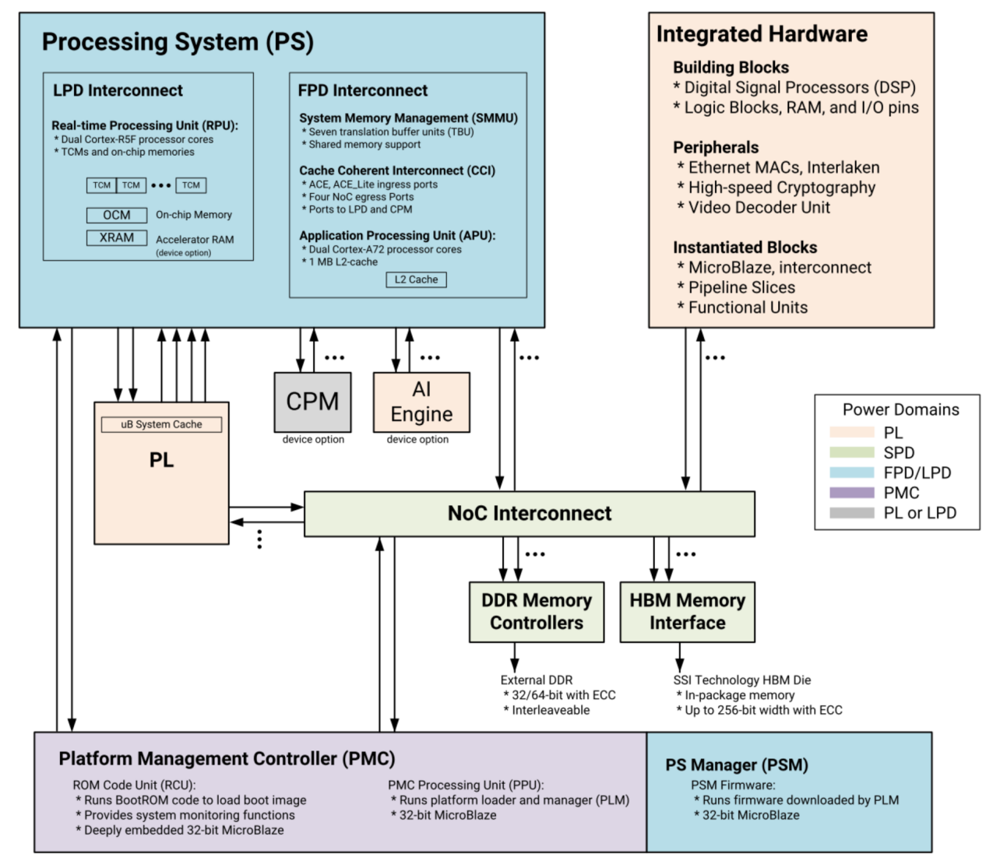
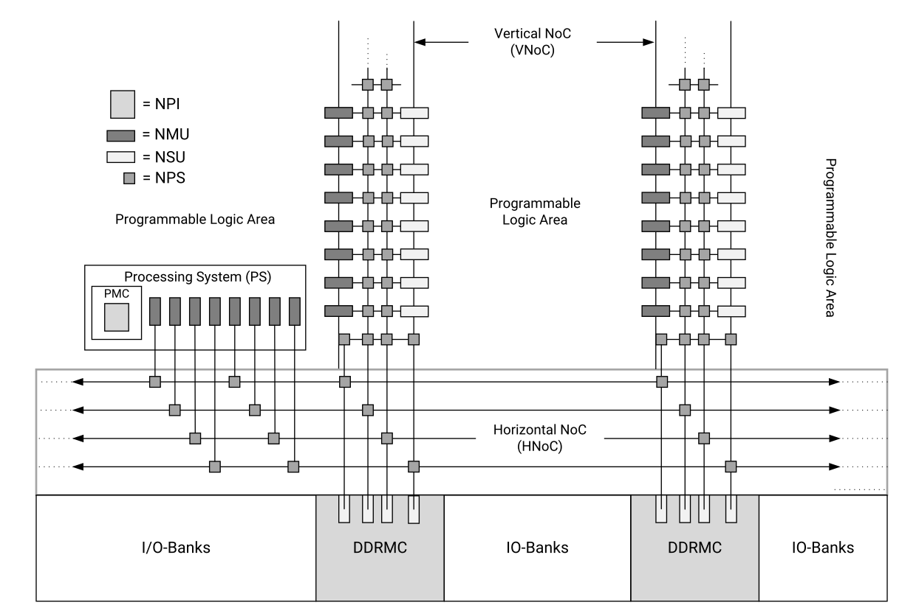
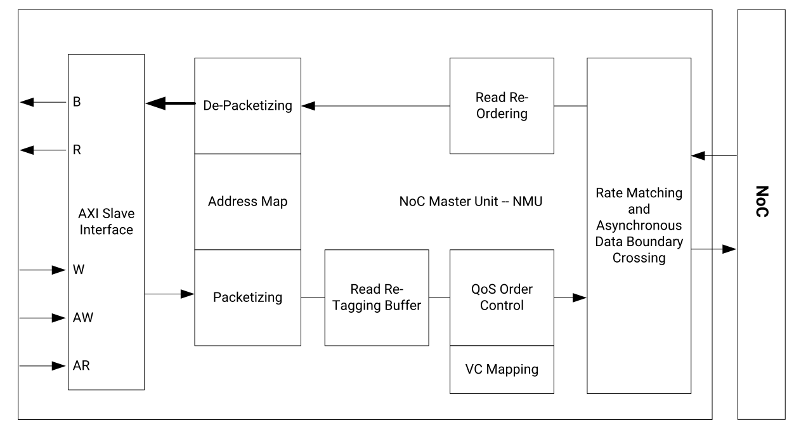
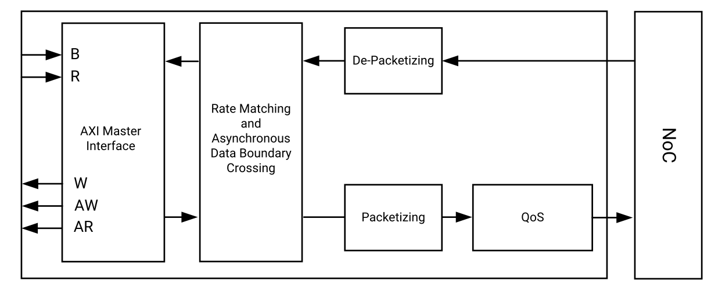
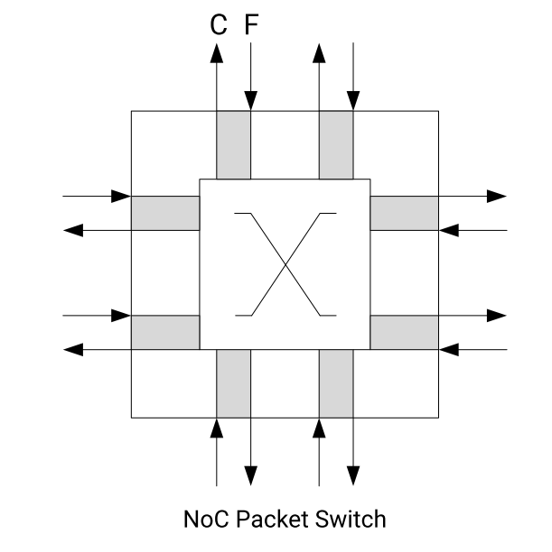
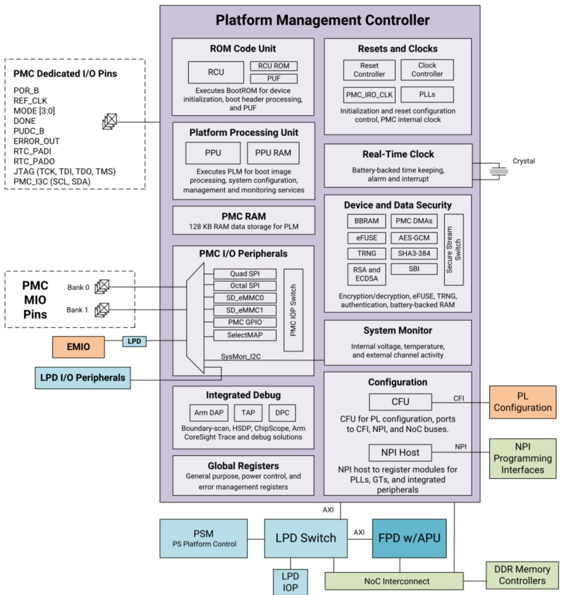
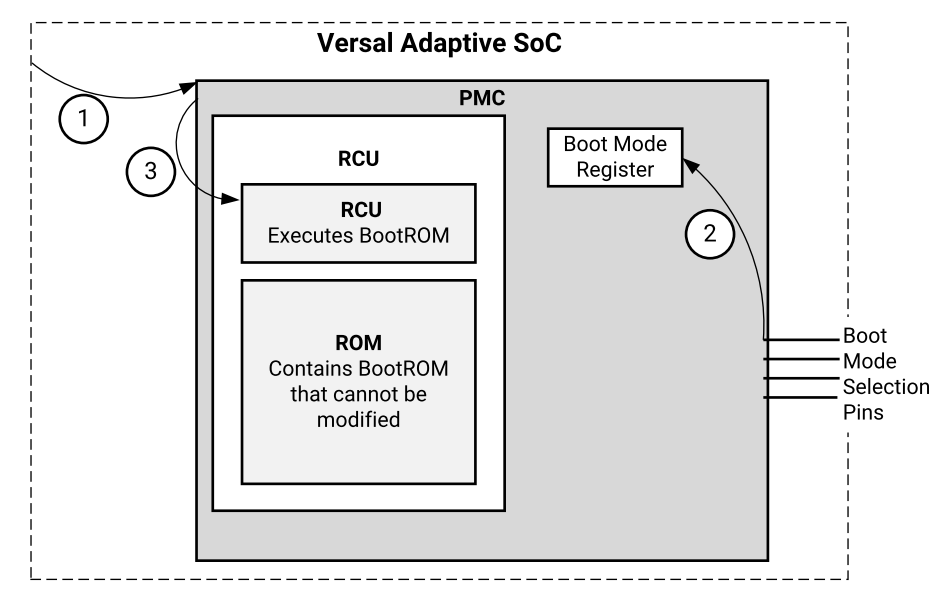

第一章 Versal介绍#
Versal包含了Cortex-A72处理器和Cortex-R5处理器，PL端可编程逻辑部分，PMC平台管理控制器，AI Engine等模块，与以往的ZYNQ 7000和MPSoC不同，Versal内部是通过NoC片上网络进行互联。
Versal芯片的总体框图
PS: 处理系统 （Processing System) , 就是与FPGA无关的ARM的SoC的部分。
PL: 可编程逻辑 (Progarmmable Logic), 就是FPGA部分。
1.1 NoC架构#
Versal可编程片上网络（NoC)是一种AXI互连网络，用于在可编程逻辑PL，处理器系统PS等之间共享数据，而之前的Versal系列采用的AXI交叉互联模块，这是Versal的不同之处。
NoC是为可扩展性而设计的。它由一系列相互连接的水平（HNoC）和垂直（VNoC）路径，由一组可定制的硬件实现组件支持，这些组件可以以不同的方式进行配置，以满足设计时序、速度和逻辑利用率要求。以下是NoC的结构图
从NoC的结构图，可以看到，其主要由NMU（NoC master units），NSU（NoC slave units），NPI（NoC programming interface），NPS（NoC packet switch）组成。PS端可以连接到NMU，再通过NPS连接访问到DDRMC，同样PL端也可以通过NMU，NPS访问到DDRMC。通过NPS路由的方式，灵活地访问各模块。
NMU结构
NSU结构
从以上的NMU, NSU结构可以看到，对用户的接口仍然是AXI总线，在其内部，将AXI数据进行组包或解包，连接到NoC网络。
NPS结构
而NMU和NSU都是连接到NPS上的，它相当于一个路由器，将数据转发给目的设备。它是一个全双工的4x4 switch，每个端口在每个方向支持8个虚拟通道，采用基于信用的流控，类似于TCP的滑动窗口。
NoC是Versal开发中非常重要的部件，PS端访问DDR，PL端访问DDR都是通过NoC，与Versal不同的是，versal在PS端没有DDR控制器，都是通过NoC访问，因此了解NoC结构是很有必要的，更多的内容可以参考官方的pg313文档。
1.2 PMC架构#
PMC（平台管理控制器）在启动，配置，运行时做平台的管理。从下图的结构图中可以看出，PMC由ROM Code Unit，Platform Processing Unit，PMC I/O Peripherals等单元组成，功能丰富。在这里主要介绍一下PMC是如何引导程序启动的。
PMC结构图
第一阶段：Pre-Boot
PMC检测PMC电源和POR_B释放
PMC读取启动模式引脚并存入boot mode寄存器
PMC发送复位给RCU（ROM code unit)
第二阶段：Boot Setup
RCU从RCU ROM中执行BootROM
BootROM读出boot mode寄存器，选择启动设备
BootROM从启动设备读取PDI（programmable device image)并校验
7. BootROM释放PPU的复位，将PLM加载到PPU RAM并校验。校验后，PPU唤醒，PLM 软件开始执行。
BootROM进入睡眠状态
第三阶段：Load Platform
PPU开始从PPU RAM中执行PLM
PLM开始读取并运行PDI模块
PLM利用PDI内容配置Versal其他部分
11a: PLM为以下模块配置数据： PMC， PS clocks
(MIO ,clocks, resets等）(CDO文件）
NoC初始化和NPI模块（DDR控制器，NoC，
GT,XPIPE,I/Os,clocking和其他NPI模块
PLM加载APU和RPU的应用程序ELF到存储空间，
如DDR，OCM，TCM等
11b: PL端逻辑配置
PL端数据（CFI文件）
AI Engine配置（AI Engine CDO)
第四阶段：Post-Boot
12. PLM继续运行，直到下一次POR或系统复位。并负责DFX重配置，电源管理，子系统 重启，错误管理，安全服务。
1.3 Versal芯片开发流程的简介#
由于Versal将CPU与FPGA集成在了一起，开发人员既需要设计ARM的操作系统应用程序和设备的驱动程序，又需要设计FPGA部分的硬件逻辑设计。开发中既要了解Linux操作系统，系统的构架，也需要搭建一个FPGA和ARM系统之间的硬件设计平台。所以Versal的开发是需要软件人员和硬件硬件人员协同设计并开发的。这既是Versal开发中所谓的”软硬件协同设计”。
Versal系统的硬件系统和软件系统的设计和开发需要用到一下的开发环境和调试工具： Xilinx Vivado。Vivado设计套件实现FPGA部分的设计和开发，管脚和时序的约束，编译和仿真，实现RTL到比特流的设计流程。
Xilinx Vitis是Xilinx软件开发套件(SDK),在Vivado硬件系统的基础上，系统会自动配置一些重要参数，其中包括工具和库路径、编译器选项、JTAG和闪存设置，调试器连接已经裸机板支持包(BSP)。SDK也为所有支持的Xilinx IP硬核提供了驱动程序。Vitis支持IP硬核（FPGA上）和处理器软件协同调试，我们可以使用高级C或C++语言来开发和调试ARM和FPGA系统，测试硬件系统是否工作正常。Vitis软件也是Vivado软件自带的，无需单独安装。
Versal的开发也是先硬件后软件的方法。具体流程如下：
在Vivado上新建工程，增加一个嵌入式的源文件。
在Vivado里添加和配置PS和PL部分基本的外设，或需要添加自定义的外设。
在Vivado里生成顶层HDL文件，并添加约束文件。再编译生成比特流文件（xx.pdi）。
导出硬件信息到Vitis软件开发环境，在Vitis环境里可以编写一些调试软件验证硬件和软件，结合比特流文件单独调试Versal系统。
在VMware虚拟机里生成u-boot.elf、 bootloader 镜像。
在Vitis里将比特流文件和u-boot.elf文件生成一个BOOT.pdi文件。
在VMware里生成Ubuntu的内核镜像文件Zimage和Ubuntu的根文件系统。另外还需要要对FPGA自定义的IP编写驱动。
把BOOT、内核、设备树、根文件系统文件放入到SD卡中，启动开发板电源，Linux操作系统会从SD卡里启动。
1.4 学习Versal要具备哪些技能#
学习Versal比学习FPGA、MCU、ARM等传统工具开发要求更高，想学好Versal也不是一蹴而就的事情。
1.4.1 软件开发人员#
计算机组成原理
C、C++语言
计算机操作系统
tcl脚本
良好的英语阅读基础
1.4.2 逻辑开发人员#
计算机组成原理
C语言
数字电路基础